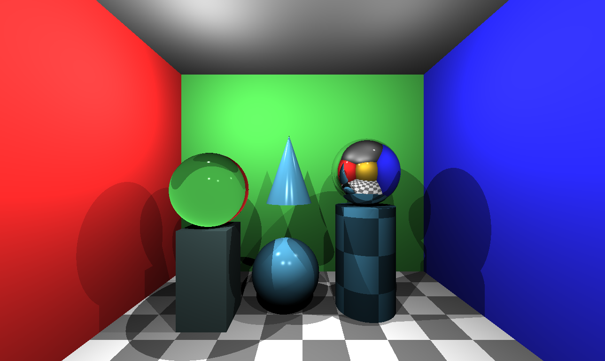
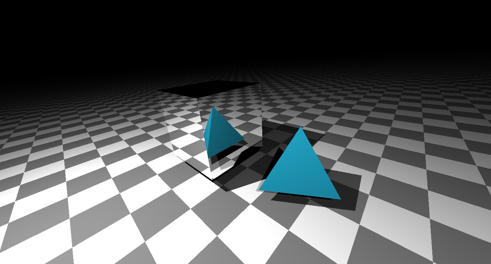
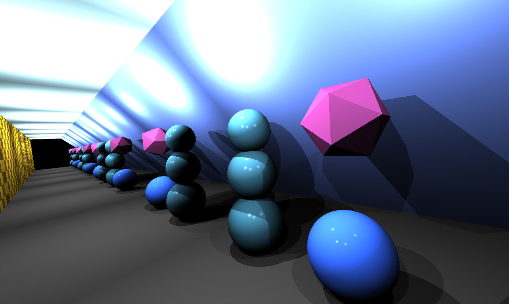

COS426 Final Project — Writeup
Switch to: Interactive Editor
That all images in this writeup were generated directly by my solution code or provided by the course staff (exception: art contest submissions may pass through intermediary software like GIMP)
That no other student has viewed my writeup explanations or my writeup images
That my solution code is my own work; particularly that my solution was not copied from any other student's solution code, and that no other student copied their solution directly code from me
That I did not discuss assignment specifics or view the solution code of any other student besides that of my (optional) partner
That I have followed all other course collaboration and course plagiarism policies as written on the course website.
Matthew Shih (mjshih)
Collaborated with: Charles An (ca9)
- (1.0) Trace Ray and Calculate Color
- (2.0) Triangle
- (2.0) Sphere
- (2.5) Box
- (2.0) Cylinder
- (3.0) Cone
- (1.0) Shadows
- (2.0) Transmission
- (1.0) Checkerboard
- (1.5) Phong material
- (1.0) Custom Scene
- (1.0) Art Contest
TraceRay
For the first part of the assignment, I followed the provided
instructions to complete the traceRay and calculateColor
functions.

Triangle
First, I determine if the point intersects the plane that the triangle lies on. I do this by calculating the normal vector by taking the cross product of 2 sides of the triange and the distance of the plane by taking the dot of the normal and 1 side of the triangle. Using this plane, I can calculate the intersection point P. If P does not exist, return INFINITY. If P exists, I use algorithm 2 described in lecture and precept to determine if the point is in the triangle. If it is not, return INFINITY. If it is, update intersection and return length found when finding the intersection with the plane.

Sphere
I followed the algorithm described in lecture notes. First, calculate tca, which is the length between the ray origin and a point which creates a perpendicular line to the ray when connected to the center of the sphere. Check that this value is not negative. Then, calculate the the distance from the center to this point. Check that the distance is not greater than the radius. Then, calculate thc, which is the distnace from this point to the edge of the sphere following the direction of the ray. With tca and thc, 2 points can be found that lie on the sphere. Starting with the smaller value, check that it is positive and, if it is, update the interection and return the length. If neither is positive, return INFINITY.
Box
I check each side if the ray intersects with that box side. If it does, I then check if the distance found is smaller than any previous distance found and update the best distance if so using chooseCloserIntersection. To check if the ray intersects with the box side, I first calculate the normal and distance of the plane that contains the side. Then, I check if the ray intersects with this plane. Then, depending on the axes that the plane is parallel to, I check that this point lies within the minimum and maximum values that the box side lies in. If so, I check the distances.
Cylinder
I followed the algorithm described in the assignment specs. To get the intersection with the open cylinder, first, calculate variables theta, vd, and phi using equations provided. Then, calculate a, b, c using equations provided and variables previously calculated. Then, use the quadratic formula to calculate two solutions t1 and t2. Use the smallest positive t to calculate the point of intersection and if it lies between the 2 caps. It can be noted that the smallest positive t can be used here before the check between the caps because the case where the smallest positive t lies outside but the other t lies inside is not necessary since that would result in the ray hitting a cap first. Thus, only the case where the smallest t lies within the caps is needed to be accounted for at this step. With this t, calcuate the point of intersction. Then use the inequalities provided to check if it exists between the caps. If so, update the position, normal, and return t. The normal can be calculated by calculating the vector that connects the point of intersection with the axis in a perpedicular line. This can be done by changing coordinate systems so the origin is at the center of a cap, projecting the point of intersection onto the axis, shifting back into the original coordinate system, then subtracting the projection from the point of intersection. To get the intersection with the disc, I first treat it as a plane and get the intersection of the ray with this plane. Then, I check if the point found is within the cap by checking if the distance between the point and the center of the disc is no more than radius.
Cone
I followed the algorithm described in the assignmnet specs. To get the intersection with the open cone, first calculate variables theta, vd, phi, and alpha. Then, calculate a,b,c using equations provided. Then, use quadratic formula to get 2 solutions for t. Use the smallest t to check if the intersection point lies within the apex and cap of the cone. Again, like the cylinder, the case where the smallest positive t lies outside but the other lies inside can be ommitted because the cap will eventually be the closest intersection. With this t, calculate the point of intesection then check that it lies between the apex and cap using the inequalities provided. Update the position and normal and return t. The normal can be calculated by first changing coordinate systems so that hte origin is at the apex. Because the cartesian equation for the cone is x^2 + y^2 = (rad(-z)/len)^2, the negative z is because cone is pointed up, the gradient for a point on the surface is (2x, 2y, -2rad^2z/len^2). A small note is that because the cone is pointing in the y direction, the positions of these calculated values must be changed. To calculate the intersection of the disc, I used the same function as the one used for the cylinder.
Shadows
Only hard shadows are implemented. First, I create a ray that originates from the light and points in the direction to the point being tested. Then, I get the distance of the first intersection that the ray hits using rayIntersectScene. Finally, I check if that distance is the same as the distance from the light to the point. If so, that means the point is the first intersection so it is not in shadow. If it is not, that means the light hit something else first so it is in shadow.
Transmission
I used the equations described in the Wikipedia page for Snell's law. First, I calculate eta according to if the material is ray is inside or not. Then, I calculate the angle of entry. If eta*sin(theta_i) is greater than 1, it has exceeded the critical angle so revert back to reflection. If not, calculate teh angle of exit. Then, using the equation in Wikipedia, calculate the vector using the angles calculated.
Checkerboard
First I discretize the intersection point into a grid by taking the floor of the respective coordinate/tileSize. Dividing by tileSize allows the grid, and thus the checkerboard, to be scaled. With these x,y,z values, I find the parity of x+y+z. Depending on the parity, I either return the average of the material color and black, or just the material color.
Phong material
I get the varialbes K_s and n from the material properties, V from the eyeVector provided, R by reflecting the lightVector with the surface normal, and I_L by scaling light intensity with the attenuation. Then I calculate the phongTerm by using the equation provided in precept.
Custom Scene
For my custom scene, I first created a Cornell Box and filled it with objects similar to the default scene. I included 3 stacked spheres as well as a sphere with a isocahedron loaded from the provided obj file. Initially, I had planned to make the spheres different reflectances to see how the image would bounce between them, but then became curious if the walls of the Cornell box were mirrors as well. Turning the left and right walls to mirrors, you can see it creates an infitite repeating room effect. I turned the objects in the room into normal materials to prevent signficant framerate drops.

Art Contest
My art contest submission is the same as my custom scene. I first created a Cornell Box and filled it with objects similar to the default scene. I included 3 stacked spheres as well as a sphere with a isocahedron loaded from the provided obj file. Initially, I had planned to make the spheres different reflectances to see how the image would bounce between them, but then became curious if the walls of the Cornell box were mirrors as well. Turning the left and right walls to mirrors, you can see it creates an infitite repeating room effect. I turned the objects in the room into normal materials to prevent signficant framerate drops.